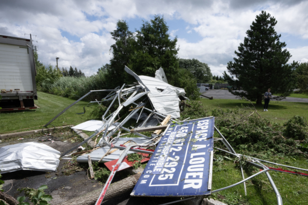

2024年7月25晚，龙卷风登陆魁省蒙特利尔南岸宝乐沙地区，树倒屋毁。此次龙卷风却没有被警报。（Ryan Remiorz/加通社） 【2024年08月07日讯】（记者楚方明多伦多报导）7月24日，加拿大环境部对魁北克拉丘特（Lachute）附近地区发布了龙卷风警报。该警报准确，在警报发出约一小时后，龙卷风在拉丘特郊外登陆。但是，当天另有3场龙卷风，却没有被预报。几天后，环境部证实，龙卷风7月24日在蒙特利尔南岸的宝乐沙（Brossard）和布切维尔（Boucherville）以及魁北克市西部的圣塔伊勒角（Cap-Santé）登陆。在这些龙卷风登陆之前，气象局都没有发出预警，只发布了极端雷暴警报。
预测龙卷风将在哪里登陆很困难，加拿大的预报员也没有出色的记录。根据安省伦敦西安大略大学（Western University）研究小组“北方龙卷风项目”的数据，2019年至2021年，只有23%的龙卷风在出现之前被预警，该比例在2022年略微上升至35%。
龙卷风项目的执行主任大卫·希尔斯（David Sills）说，加拿大环境部最近改进了其龙卷风警报程序，但他说，环境部应该发布更多的警告。
希尔斯说，气象部门应该训练预报员更快地评估不可预测的天气模式，更好地利用雷达和卫星图像产生的数据进行预测。
联邦政府使用各种特别警报通知公众有关龙卷风的情况。最紧急的是“警报就绪“（Alert Ready）信息，它直接发送到手机、电视和广播上。
在过去5年中，环境部发出的龙卷风预警数量急剧上升。2019年，发放了85个，到2023年，该数字跃升至674个，2024年截至目前为538个。在魁北克，2019年只有3个龙卷风警报，但到2023年上升到85个。今年到目前为止已经有41个。
虽然警报增加并不一定意味着会有更多的龙卷风，但希尔斯的研究小组确实很忙。他说：“向手机发送警告确实能挽救生命。”
他说，2022年，魁北克省和安省的德雷科风暴（一种强烈、快速移动的风暴）最终造成16人死亡，“他们都是来不及快速躲避的人” 。
当预报有龙卷风或强雷暴天气（风速超过130公里/小时，或冰雹至少7厘米）时，就会自动触发“警报就绪”信息。
责任编辑：文芳